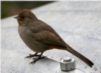
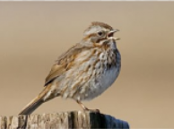
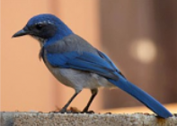

California Backyard Birds
| There are many different types of California Backyard Birds. Here are some different birds that you can find sometimes in your very own backyard. |
|---|
| For more information on birds, try going to Project FeederWatch. |
|---|
|  |
 |
 |
| I'M A CALIFORNIA TOWHEE GLAMOUR BIRD |
I'M A HOUSE FINCH BIRD |
I'M A NORTHERN MOCKINGBIRD |
| I may be prompted by a tireless knocking at your window or car mirror. |
I build my nest in cavities, hanging plants, and other cup-shaped outdoor decorations. |
My mimicking ability, as reflected by my name means 'many-tongued mimic'. |
|  |
 |
 |
| I'M A SONG SPARROW BIRD |
I'M A WESTERN MEADOWLARK |
I'M A WESTERN SCRUB JAYBIRD |
| I use melodious and fairly complex song to delcare ownership of territory and to attract females. |
My buoyant, flutelike melody can brighten anyone's day. |
I am a fixture of dry shrublands, oakwoodlands, and conspicuous visitors to backyards. |
| California Backyard Birds are beautiful creatures! |
| The End. |